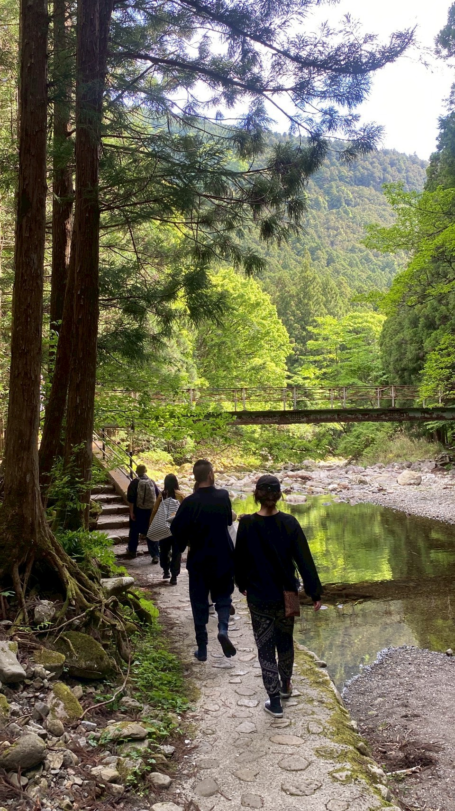
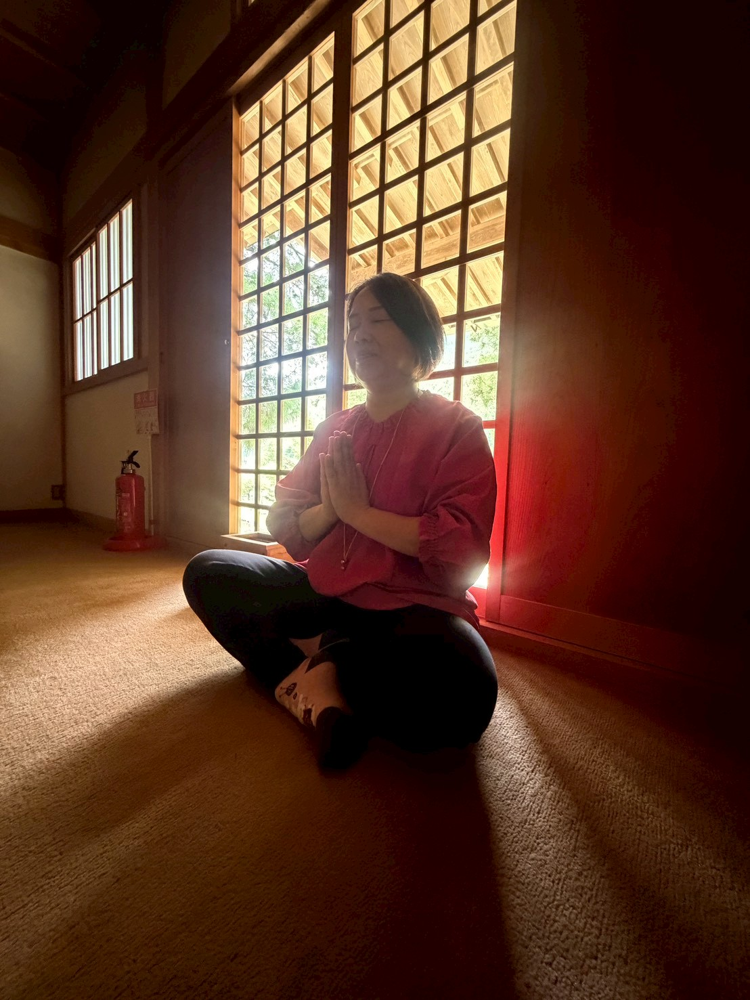
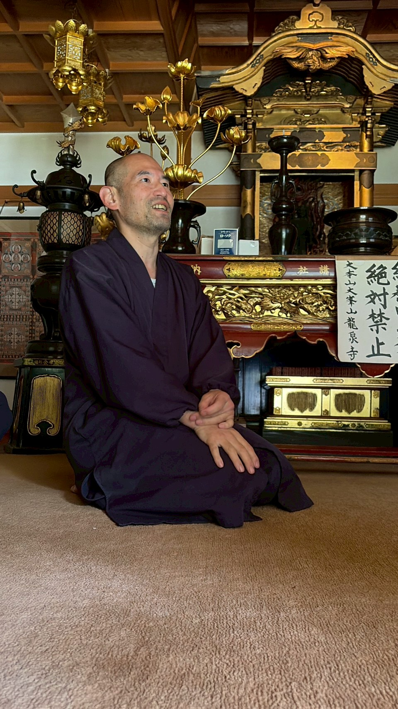
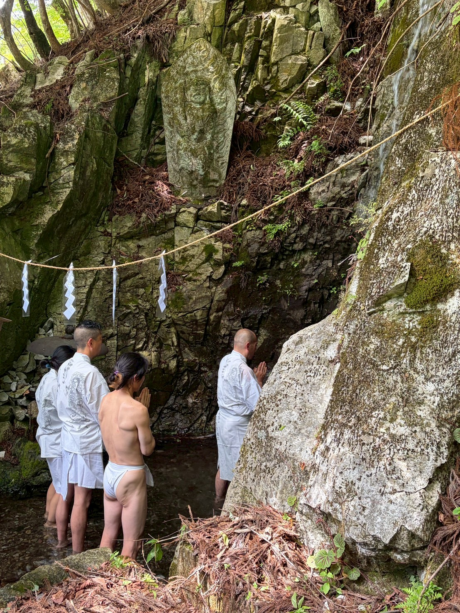
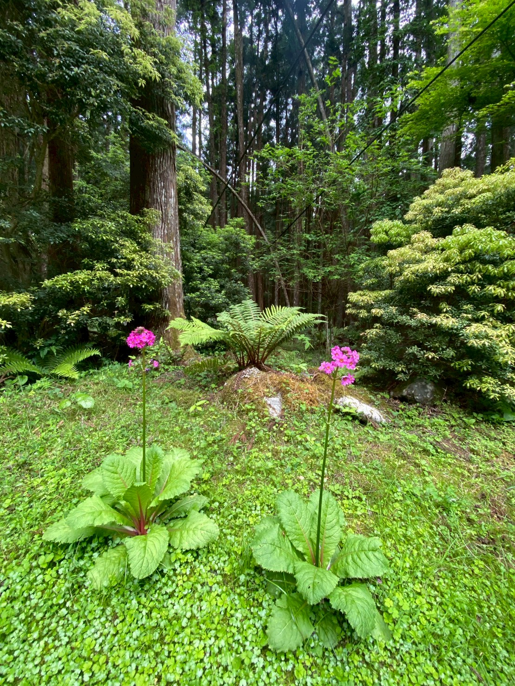
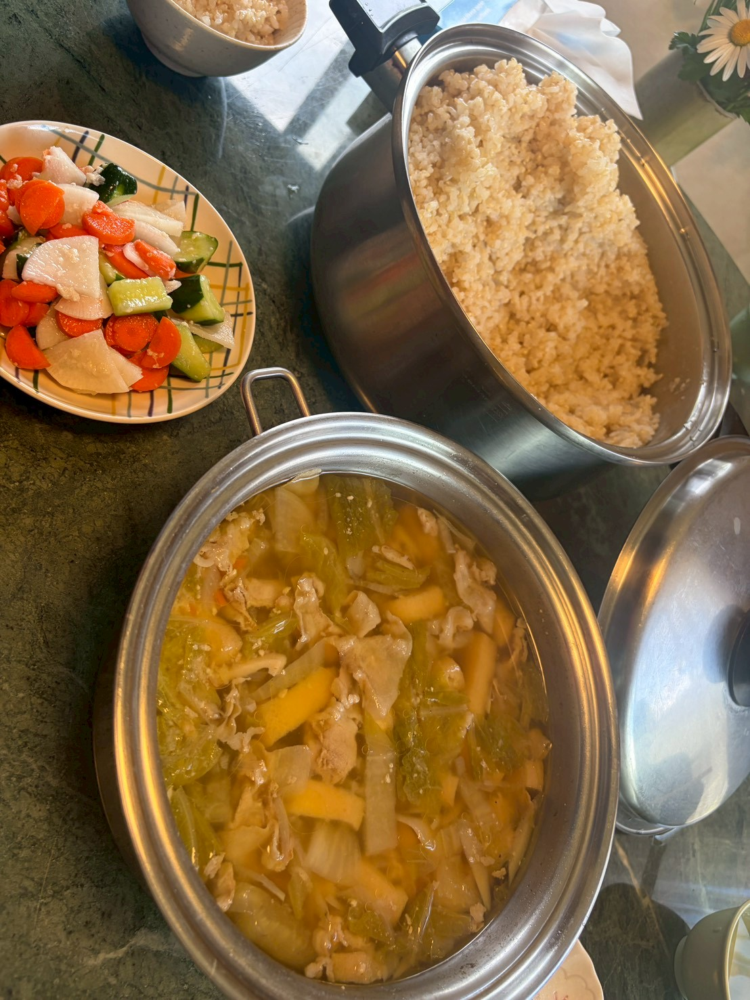
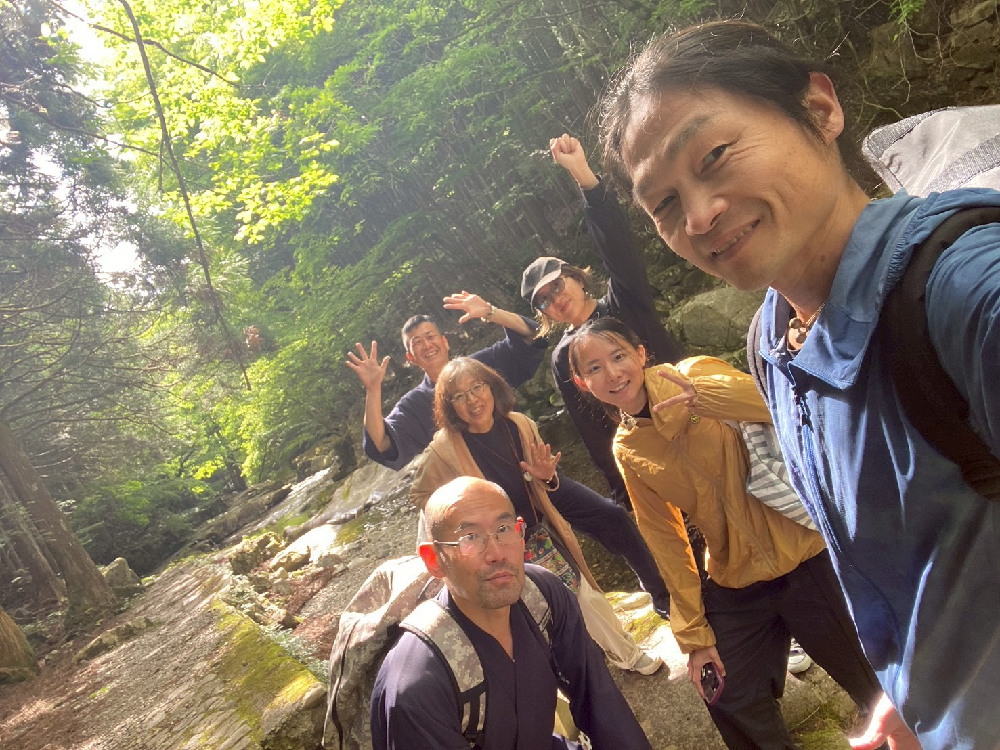
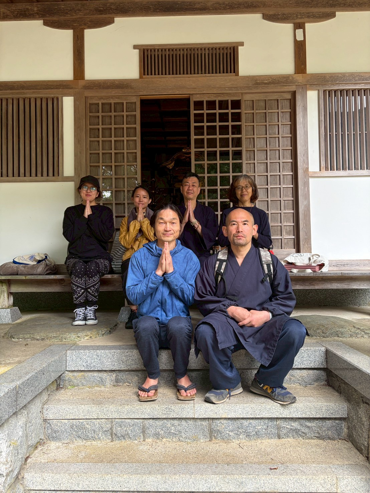

天川村座禅会。日常へ戻ったあと、今日の呼吸と気づきへもう一度還るための記録です。
今回は、いつものように洞窟の中へ入って坐るのではなく、龍泉寺で呼吸を整えたあと、水辺と森を歩き、岩屋の外の場で坐りました。
木々のざわめき、流れる水、岩屋から届く冷気、頬を通る風。静けさは、音がなくなることではなく、そのすべての中で自分の呼吸へ還っていくこととして残りました。

本堂の光の中で坐る時間。水の場で手を合わせる時間。岩屋の前で冷気を受けながら坐る時間。参加者さんからも、「思った以上に場所が大事だった」という言葉が生まれました。


温かい食事を囲みながら、坐っていた時間に身体や意識の中で起きていたことを、ゆっくりと言葉にしました。
写真を見返した瞬間に、身体が先に思い出すものがあります。今日見ていた景色を、ここに残します。





今日の記憶が薄れそうになったとき、
またここへ戻ってきてください。
呼吸の奥に触れた、自分の軸へ。